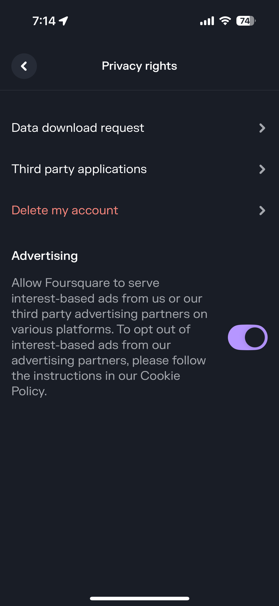

Import Foursquare Checkins
Step-by-step guide to bring your Swarm checkin history into Tap Tap Track
Overview
You can import your Foursquare (Swarm) checkin history into Tap Tap Track. The process involves:
- Requesting your data from the Swarm app
- Downloading the ZIP file when you receive the email
- Extracting the checkins JSON file
- Importing it into Tap Tap Track
Open Settings in Swarm
Open the Swarm app on your iPhone and tap on your profile icon in the bottom right corner. Then tap on the gear icon (⚙️) in the top right to open Settings.

Navigate to Privacy Rights
In the Settings menu, scroll down and tap on "Privacy Rights". This will take you to Foursquare's privacy and data management options.
Request Your Data Download
Tap on "Data Download Request". You'll be asked to confirm your email address. Foursquare will process your request and send you an email when your data is ready (this usually takes a few minutes to a few hours).

Download and Extract the ZIP File
When you receive the email from Foursquare, open it on your iPhone and tap the download link. The ZIP file will download to your Files app. Open the Files app, find the downloaded ZIP file, and tap on it to extract it. This will create a folder full of files.

Open Tap Tap Track and Go to Manage
Open the Tap Tap Track app on your iPhone and navigate to the Manage tab. Scroll down to the bottom of the page to find the "Import Data" section with the "Import Foursquare Checkins" option.

Import into Tap Tap Track
Tap "Import Foursquare Checkins" and navigate into the extracted folder, then into the "data-export" folder. You'll find files named like "checkins1.json", "checkins2.json", etc. Select one of the checkins JSON files to import. The app will import all checkins from that file. If you have multiple checkins files, repeat this process for each file.